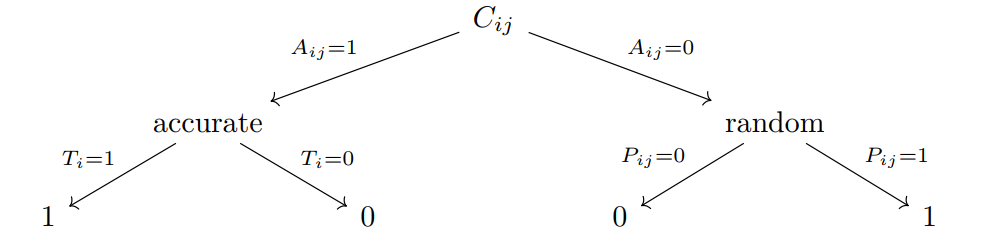
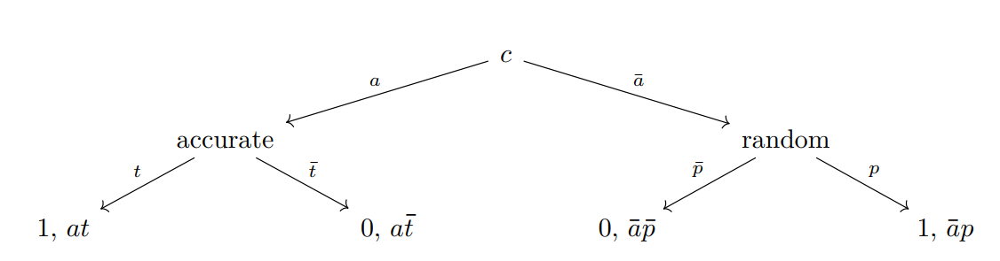

This chapter gives a brief background on rater agreement with a focus on the goals of the project and how legacy methods fall short. It contrasts psychological measurement methods to machine learning algorithms. A general model is introduced that combines the best features of both of those cultures, and an example is given.
1.1 Overview
Humans often use consensus to assess knowledge. In the introduction to an article on this topic Dawid & Skene (1979) describe problems in using such consensus.
When a patient’s historyis taken by different clinicians, different replies may be obtained to the same question. This may occur for a number of reasons; perhaps slightly different wording is used in each case, or perhaps the question is one the patient finds difficult to answer satisfactorily and so changes his reply from time to time. Similarly, in classifying a facet (sign or symptom) for type, severity, extent or duration, the patient and the clinicians may have different interpretations of the underlying scale of measurement. Such facets are said to be subject to observer error in that the response recorded may not be the “true” response as defined by some standard description of the facet or as implied by a consensus of medical opinion.
We might seek a second opinion for a diagnosis, ask around for restaurant recommendations, or look for online reviews of a product. Intiuitively, we put more weight on opinions that have more agreement. This chapter describes how agreement or disagreement can be quantified. As in the quote above, we may have an idea of metaphysical truth that is obscured by error in the reported observations.
In behavioral science, the focus of these statistics is on human observers whom we’ll call “raters.” Raters independently assign “ratings” to “subjects.” This describes a familiar case like a product review with a five-star rating system (although those ratings may not be independent). However, the same idea applies to any categorization task, like classifying images of cats and dogs, or diagnosing diseases from medical images. A fascinating example comes from an article in The Atlantic Magazine, here describing an analysis of a very old text called the Voynich manuscript.
Davis magnified the handwriting, she noticed subtle variations. In certain places, the script was more cramped or more likely to slant as it crossed the page. She tested this observation by picking a letter that didn’t appear often and tracking it across the manuscript’s pages. Its style, she saw, varied among groups of pages but not within those groups. This suggested that the differences—larger or smaller loops, straighter or curvier crossbars, longer or shorter feet—were the product of different scribes rather than of one scribe writing the same letter in different ways.
See Davis’s paper for details1. For our purposes, the “raters” are scholars who categorize writing styles, the “subjects” are sections (folios) of the manuscript they are reviewing, and the presumed different scribes are the categories we generically refer to as “ratings.”
Table 1: Selected rows from a table at the website for the manuscript: https://voynich.nu/index.html, comparing an early attempt to classify writing “hands” (Currier) to the recent classification (Davis). Hypothesized identity is unique to each column with the numbers denoting individual scribes.
Folio(s)
Prescott Currier
Lisa Fagin Davis
f41, f48, f57r
2
5
fRos (obverse)
3
2
fRos (main)
3
4
f87, f88, f93, 96
4
1
f94, f95
5
3
f103, f104, f106
X
3
f105
Y
3
In Table 1 it’s recorded that Currier thought that the obverse and main folio fRos were in a single hand, whereas Davis has two scribes. Conversely, Davis has the last three rows as the same author while Currier has three. This is an example of how science works toward consensus by placing observations into categories. Agreements are good for pointing to what might be real, and disagreements are for honing or discarding theories.
The statistical question for data like this is to compare variation within groups to variation between groups. One application is an idea called “signal-to-noise ratio,” which is a measure of how much of the variation in the data is due to the thing we’re interested in (signal) versus how much is due to random variation (noise). In the manuscript example, the signal is the commonality of handwriting within contiguous sections, and the noise is variation within each section. Reliability of measures is the same idea in different clothing, where we might formulate reliability as between-subject variation divided by total variation (Shrout & Fleiss, 1979). As an example, college grade averages (GPA) can have a reliability of about 0.8, meaning that 80% of the variation in grades is due to differences between students, and 20% is due to variation in how individual students earn grades. This makes GPA useful as a statistical measure, for example in predicting career outcomes.
The signal-to-noise approach usually treats a rating as an ordinary number (scalar), so a 1-5 rating scale is placed on the number line as a measure. If we start from the idea of rater agreement, however, this number-line approach is not as useful as counting agreement on categories. In the development below, we’ll be concerned with ratings as categories, and usually binary choices between some Class 1 or Class 0, e.g. “Does this patient have Covid?”. It is useful to start with the idea of a “true” classification.
1.2 Seeking Knowledge
It turns out that the questions “what is true?” and “what is knowledge, anyway?” are difficult to answer. There is a great body of work in epistemology, the philosophical study of knowledge, from which we can take a clever idea to get started.
To start, we have to imagine that “truth” exists. Since we are talking about classifications of subjects into one of two categories, we must commit to the idea that these categories (words that humans made up) might correspond to something in objective reality (whatever that is). We can easily make up descriptions that are fantasies, like unicorns or flying whales, and the goal is to have a way to distinguish these phantasms from real things like penguins and taxes. To do so, we have to imagine that by some mysterious means, our intellects and discourse can access Nature and name things.
Words are slippery things, however. Although there are definitions, the real meaning of “pizza” is (ironically) ineffable; one could write volumes on the subject. Let’s take Platos’s definition of a man as a featherless biped. Our goal is a set of classifications “man” or “not man” generated from independent observers (we call them raters) who each inspect some objects in the world (we call them subjects) and assign “man” or “not man” to each. Then we’ll take that data and apply the between- and within-variance idea.
Therefore the definition isn’t enough. We also need a procedure for generating the data the way we want. To ensure independence of raters, we don’t want them to collaborate on decisions, for example. In the sciences, procedures can be quite elaborate, as in detecting and classifying Higgs bosons, which requires a huge particle accelerator.
The story is that Diogneses the Cynic tossed a plucked chicken at Plato’s feet and declared “here’s your man.” The example drives a wedge between the definition “featherless biped” and what is actually meant by “man.” Outside of math and science, definitions and procedures are fuzzy in this way. Rater agreement statistics attempt to defuzz the ratings, to understand the reality behind them.
Here’s where the idea from epistemology is key, because it gets to the nature of the fuzziness of classification. First we define knowledge as justified true belief (JTB), and then sort out where the fuzziness is.
There are three parts to JTB, and we already talked about truth; as a prerequisite we must believe that true statements can be made about the world, which means accessing something real and describing it. The third piece of JTB is belief, which we’ll take to be the classification assigned by a rater. If our rater looks at a horse and writes down “not unicorn,” we’ll assume that the classification represents what the rater believes. This runs into problems if we want to consider adversarial raters, like someone paid to rate consumer products, or an angry customer rating a service poorly for extraneous reasons. We won’t consider those possibilities here.
The first piece of JTB is where the fuzziness lives: justification. Outside of math, justification in words isn’t complete2. In the case of Diogenes versus Plato, an follower of the latter might reason that the plucked chicken meets the great philosopher’s definition, and therefore is a man. Others might use common sense to conclude that it’s not a man. There is more than one way to justify belief, but not all of them result in true classifications.
The JTB idea was dealt a blow by Gettier, who posed a number of examples where justification goes awry, but the idea is much older. Consider this example from Dharmottara in 779 AD3.
A desert traveller is searching for water. He sees, in the valley ahead, a shimmering blue expanse. Unfortunately, it’s a mirage. But fortunately, when he reaches the spot where there appeared to be water, there actually is water, hidden under a rock. Did the traveller know, as he stood on the hilltop hallucinating, that there was water ahead?
The traveller had a belief that turned out to be true, but the justification was incorrect. The philosphers are concerned with whether or not this constitutes knowledge4, but we’re more interested in something simpler. That is to categorize the ways truth and belief can happen. If they don’t coincide (if we believe something false), then we’ll assume that the justification was incorrect. As the Gettier problems and the discussion they generated demonstrate, there are a lot of complicated ways in which justification can go awry.
In the literature of rater agreement, one can find similar language. In Aickin (1990), we find “The \(\alpha\) agreement parameter is defined as the proportion of a population of items that are classified identically ‘for cause’ by two classifiers, the remaining items being classified at random […].” The author suggests that some subjects are more difficult to rate than others, which hints at modeling each subject’s probability of being in a category, in truth. This idea was explored in Dawid & Skene (1979), who also allowed that raters might have different proficiencies.
Another instance comes from the derivation of a rater agreement statistic called AC1 Gwet (2008). The author notes that “the assumption [is] that any rating that is not random will automatically lead to a correct classification, while a random rating leads to a correct classification with probability 1/2.” The idea is that we conceptually separate accurate ratings from random ones, which then means we must consider the probability distribution of the random ones. The random assignments will sometimes be correct, but for the wrong reason–just like the Gettier problems.
1.3 The Confusion Matrix
Diagnosing illness is an important classification problem, and the simplest version is a blood test that returns a positive or negative result, perhaps scanning for an antibody. There are four possibilities, which can be organized into what is commonly called a confusion matrix. Suppose that we consider a statement S about the world, like “this patient has the flu.” Using a definition and process we reach a conclusion, so that we believe S to be true or false. This generates the classifications we’re interested in: this is what the raters do, generating lots of S or not-S data on cases.
The truth is often inaccessible, but recall that we assume that it exists, so that the statement really is true or false: each patient really does have the flu or does not. Here are the four possibilities:
Table 2: Sample confusion matrix
S is true
S is false
Believe S is true
True positive cases
False positive cases
Believe S is false.
False negative cases
True negative cases
Notice that there are four spots in the table where data can go: if we had perfect knowledge we could count the number of true positive cases, etc. If we converted these numbers to proportions by dividing by the table, we have three parameters left. This foreshadows what comes later: the heart of the classification problem (in its simple form) is a three-parameter problem5.
The limitation of casting the confusion matrix into a single-parameter statistic was noted by Cicchetti & Feinstein (1990), who suggested “two separate indexes of proportionate agreement in the observers’ positive and negative decisions. […] Why do we want a single index?” Another example comes from the motivation for the AC1 rater statistic Gwet (2008). It separately considers rater true positives and true negatives, but then assumes that these are identical for each rater, so that the result is a single parameter.
As a concrete illustration, consider the wine judging data used in Hodgson (2008) (data from the author in personal communication). The first five rows look like this:
Table 3: Wine ratings showing rows 1-5 of 183, taken from the study by Hodgson (personal communication).
Wine
J1
J2
J3
J4
1
3
3
3
3
2
3
3
3
3
3
3
3
2
4
4
3
4
3
1
5
4
2
1
1
The 1-4 scale is ordinal, meaning that we imagine quality to increase with the numerical value. For this discussion, we will reduce the scale to a binary classification: acceptable wine (ratings 2-4) or wine to avoid (rating 1). This simplifies the table to.
Table 4: Simplified wine ratings, where 1 means “acceptable” and 0 means “avoid.”
Wine
J1
J2
J3
J4
1
1
1
1
1
2
1
1
1
1
3
1
1
0
1
4
1
1
1
0
5
1
0
0
0
Intuitively there is more reason to believe wines 1 and 2 are acceptable than with 3 or 4, for which one judge found them not metal-worthy. It seems safe to avoid wine 5, since all but one of the judges found it not to be metal-worthy.
We can put this information into the confusion matrix, but we’re missing information.
Table 5: Confusion matrix for the first five wines, with missing information as question marks.
true value of 2-4
true value of 1
Total
rating of 2-4
?
?
15
rating of 1
?
?
5
There is some awkwardness in imagining that the physical universe encompasses a reality including true wine ratings. It seems absurd on the face of it that the physical laws of the universe imply “wine science.” It’s useful to think of it in reverse: this reification of the ratings is a hypothesis that may be rejected by the statistics we derive from the data. If we find that raters are assigning ratings at random, there’s no evidence here for the reality of wine asthetics. On the other hand, strong indications of non-randomness need to be explained somehow.
Taking the leap that all non-randomness is causal, and physical reality has a monopoly on causality, then something concrete in the world is behind the rating consistency. We could imagine the chemical similarities and differences of wines and their effects on human anatomy, and so on. Being “real” in this case doesn’t mean that the universe appreciates wine, only that the universe includes physical blobs called humans, and they have mechanical consistencies that correlate observations in this case. The confusion matrix is also used for calculating the causal effect of an experiment. In a medical context, the rows might be treatment categories and the columns patient outcomes. See Eubanks (2014) for more on that.
By using the rating counts for each subject instead of the total, we can–surprisingly–estimate the whole confusion matrix. We can even estimate the true classification values for each subject. For that level of detail see Chapter 4: Hierarchical Models.
1.4 Agreement Statistics
Signal and noise as variability between and variability within subjects translates into rater agreement within subjects versus between subjects. The usual way to turn this idea into a number is to count the number of actual agreements and divide by the total number possible.
Table 6: Rater agreements count, showing the maximum agreements for N raters, the number matches that are evidence versus logical implications and the ratio of evidence to matches.
Number of raters
Maximum agreements
Evidentiary agreements
Implied agreements
Evidence / Maximum
1
0
-
-
-
2
1
1
0
1
3
3
2
1
.67
4
6
3
3
.5
5
10
4
6
.4
N
\(N(N-1)/2\)
\(N-1\)
\(N(N-1)/2 - N + 1\)
\(2/N\)
The maximum agreements in the table come from the combinatorics formula “N choose 2,” counting the number of possible pairs out of N. If a group of 5 people meet and all shake hands, it’s 10 handshakes. The number of pairs grow much more rapidly than the number of raters does6.
There’s a rule in thumb in statistics that it’s preferable to use standard deviation instead of variance when understanding the data. That’s because the units of standard deviation are the same as the original data, whereas the variance has squared units. The same effect is going on with counting agreement. In some sense, what we want looks more like the square root of agreement.
Intuitively, three raters agreeing doesn’t seem like three times as much evidence as two agreeing. And if we look at where those agreements are coming from, most of them are purely logical. Agreement is transitive, meaning if A agrees with B and B agrees with C, then A agrees with C. This is a logical necessity, and it’s not evidence of anything. The Evidentiary and Implied columns of the table record the distinction between the two types of matches. As the number of raters \(N\) increases, the logically necessary agreements greatly outnumber the evidentiary ones, so the ratio in the last column of the table decreases toward zero.
If we only counted the evidentiary agreements, the maximum for \(N\) raters would be \(N - 1\), which is roughly proportional to the square root of the total number of agreements. We’ll come back to that idea later. However, the well-trodden path is to estimate the probability of agreement over all the subjects, which leads to the kappa statistics.
For the five wine ratings that are reduced to the binary category “avoid” or “don’t avoid” in Table 4, we can calculate the agreement as follows.
Table 7: Agreement calculation for the first five wines, showing the maximum possible agreements, the actual agreements, and the agreement proportion out of the maximum.
Wine
Raters
Possible
Actual
Agreement
1
4
6
6
1
2
4
6
6
1
3
4
6
3
.5
4
4
6
3
.5
5
4
6
3
.5
For the fifth vintage in Table 7, there are more matches with the zeros than there are with the ones; both are counted. It is at this point what seemed like a good starting point begins to turn into a muddle, because since both the zeros and the ones can create agreement, how do we know what’s good enough agreement? What’s the worst agreement possible?
A group of \(n_1\) raters who agree on the 1 ratings produces a number of agreements about proportional to \(n_1^2\), and similarly the \(n_0\) raters of 0 agreements produce about \(n_0^2\) agreements. Together that’s around \(n_1^2 + n_0^2\) agreements, which is less than or equal to \((n_1 + n_0)^2\), which is about the number of agreements if everyone agreed on a single category. So we get more agreement when everyone agrees than we do when the raters split into groups. That means that the least agreement happens when the raters are evenly split, giving us a floor for agreement.
Table 8: Minimum rater agreement rates
Number of raters
Maximum agreements
Minimum agreements
Minimum rate
4
6
2
.33
6
15
6
.40
8
28
12
.43
10
45
20
.44
even N
\(N(N-1)/2\)
\(N(N/2-1)/2\)
\((N/2-1)/(N - )\)
For six or more raters, there’s at least a 40% agreement rate, even when there’s the least possible amount of agreement. It’s annoying that the minimum rate of agreement changes with the number of raters. For real cases when we want to use these ideas, we might have different numbers of raters for different subjects, complicating an average minimum rate, which defines the worst case agreement.
1.5 Chance Correction
We saw in the previous section that the minimum frequency of agreement among raters is quite large, tending toward one half of the maximum possible. Whatever statistic we create as a measure of agreement needs to take that into account if we are to make sense of the results. We’ll get maximum agreement if all the raters choose the same category (of the two choices), and we’ll get minimum agreement if they split evenly between the categories, as if they each flipped a coin to decide. So there’s an association between worst-case random raters and the minimum agreement rate. This is the basis of the chance correction in the S statistic, which assumes coin-flipping raters as the worst-case benchmark from which to measure agreement.
The general formula for taking into account a worst-case (random) match rate \(m_r\) first computes the practical range of our scale, which is \(1 - m_r\), since the statistic can’t be less than \(m_r\). The amount of agreement observed \(m_o\) is then pinned to this scale as a “chance-corrected” match rate \(\kappa\) (kappa) with
\[\kappa = \frac{m_o - m_r}{1 - m_r}\]
The S statistic is a special case of this formula, where \(m_r = .5\). The sample of wine ratings can be used to illustrate. Recall that earlier we simplified the judges’ scale of “no medal” to “gold medal” to a binary classification between “no medal” (coded as zero) or “any medal” (coded as one). There were 30 maximum agreements among the four raters over the five wines (six per wine), and 21 actual agreements. The minimum is when the ratings are evenly split on each case, generating two agreements for each wine, or 10 total. An S-like statistic would be calculated like this:
\[
\begin{aligned}
m_o &= 21/30 = .70 \\
m_r &= 10/30 = .33 \\
\kappa_s &= \frac{.70 - .33}{1 - .33} = .47
\end{aligned}
\] The kappa is now on a scale of zero (worse) to one (perfect agreement). Interpreting what the value means is difficult because it’s on the wrong scale as noted above. A value close to one half sounds mediocre, but not terrible, but we’re really looking for something like the square root of the agreement rate, which is .69. That value corresponds better to the intuition that the agreement in the table looks pretty good.
The coin-flipping assumption for randomness can be replaced with other assumptions. This has the effect of increasing the assumed worst-case agreement rate and hence decreasing kappa values. Perhaps the most popular choice is to reason that the raters are more likely to randomly pick the most common category so the coin should be weighted according to the rating distribution.
For example, the table of simplified wine ratings has 15 ratings of 1 and 5 of 0, or 75% 1-ratings. The worst case match rate is then the product of the proportions of 1 ratings, or \(m_r = (.75)(.75) + (.25)(.25) = .625\). This is the assumption of the Fleiss kappa. Note that the actual worst case match rate is still close to one half (because of the math), so it’s possible to get a negative Fleiss kappa if the assumption about the distribution of randomness fails.
One calculation under this proportionality assumption is:
\[
\begin{aligned}
m_o &= 21/30 = .70 \\
m_r &= .625 \\
\kappa_f &= \frac{.70 - .625}{1 - .625} = .20
\end{aligned}
\]The actual calculations of these statistics are complicated by the choice of using exact combinatorical counts or long-run estimates. This distinction need not concern us in here.
The deflation of the rater agreement statistic in the Fleiss calculation above makes it clear that assumptions about random agreement are critical. A researcher may justifiably wonder which value is correct: are the wine judges in pretty good agreement, or is the judging mostly random? For historical reasons, rather than treating rater disagreement as a parameter to be discovered, the field has evolved to propose many variations of the kappa formula with different assumptions about the worst-case agreement rate.
A limitation of most of the kappa statistics is that they make the simplifying assumption that a pair of raters reaches agreement randomly if both raters are random. This omits the possibility that one rater is accurate and the other isn’t.
2 The Kappa Zoo
There are by now several statistics advertised as rater agreement statistics, including Cohen’s kappa, Fleiss’s kappa, Scott’s pi, Krippendorff’s alpha, S, and AC1. For convenience, these statistics will be referred to generically as “kappas.” Researchers who want a simple answer are faced with a bewildering set of options and claims about them. In Vach & Gerke (2023) we get a sense of the situation.
Gwet’s AC1 has been proposed as an alternative to Cohen’s kappa in evaluating the agreement between two binary ratings. This approach is becoming increasingly popular, and researchers have been criticized for still using Cohen’s kappa. However, a rigorous discussion of properties of Gwet’s AC1 is still missing.
The authors illustrate both the need for clarification and the faddishness that research communities can adopt when lacking real criteria. The kappas are ill-suited to answer such questions, and the proliferation of agreement statistics makes it difficult to compare results across studies or to know which one to use. Given pressures to publish results, there may be a tendency to use the statistic that gives the highest value, or to use the one that is most familiar. See Button et al. (2020) for a discussion of rater agreement statistics in the context of the “crisis in confidence in psychological research.”
It’s not just difficult to know what kappa to use, there are no meaningful guides to interpreting the results. “There is a wide distinction in the elucidation of Kappa values, and several efforts have been made to assign practical meaning to calculated Kappa values,” wrote the authors of Chaturvedi & Shweta (2015), who mention a widely-used heuristic found in Landis & Koch (1977) that proposed a translation between numerical values of kappa and qualitative descriptions of agreement, such as \(\kappa \ge .81\) is “almost perfect.” The categories are arbitrary, do not translate well between different agreement statistics (which can give different values for the same data) and their assumptions, and do not provide insight into how to improve ratings.
The agreement statistics for ratings have problems that should now be evident. The goal is to understand a three-dimensional relationship between ratings and true values, but the statistics are single parameters. A second parameter, the worst case baseline, is buried in an assumption, which varies by kappa, and is not tested for fit to the data. The result is a bewildering array of choices for rater agreement measures. As a result of this confusion, different cultures have emerged. If getting published is the goal, then higher agreement rates are more desirable, so a researcher can shop around for the “best” one.
A research agenda was suggested in Landis & Koch (1977) that can be paraphrased as understanding (1) the true category of each subject, (2) the accuracy of raters, (3) truth and accuracy within sub-populations of subjects, (4) conditions that cause disagreement, and (5) what distinguishes “for cause” agreement and random agreement. Some of this can be accomplished by taking a fresh look at the kappas.
3 Machine Learning
The geyser of data produced in the information age has led to new methods of analyzing it that fall generally in the description of “machine learning (ML).” Assigning categories to subjects is a common task in machine learning, and the field has developed a number of methods to do so, including neural networks, support vector machines, and random forests. The goal is to assign categories to subjects in a way that generalizes to new subjects. The methods are often evaluated by comparing the predicted categories to the true categories, and the results are summarized in a confusion matrix. See Carpenter (2008) for a good example of this literature.
Breiman (2001) rather famously drew a line between classical statistics and machine learning algorithms, with the glove thrown down in the paper’s abstract:
There are two cultures in the use of statistical modeling to reach conclusions from data. One assumes that the data are generated by a given stochastic data model. The other uses algorithmic models and treats the data mechanism as unknown. The statistical community has been committed to the almost exclusive use of data models. This commitment has led to irrelevant theory, questionable conclusions, and has kept statisticians from working on a large range of interesting current problems. Algorithmic modeling, both in theory and practice, has developed rapidly in fields outside statistics. It can be used both on large complex data sets and as a more accurate and informative alternative to data modeling on smaller data sets. If our goal as a field is to use data to solve problems, then we need to move away from exclusive dependence on data models and adopt a more diverse set of tools.
There are differences in the methods and philosophies of the two cultures. The kappa approach is implicitly backward-looking, asking “how accurate were these ratings,” with the assumption that the measured accuracy (a kappa) will carry forward to future instances. The ML approach is more forward-looking, with a suite of tools like cross-validation and a vocabulary (bias-variance trade-off) to measure generalizability. As we have seen, the kappa approach is to reason out a plausible chance-correction calculation and use it to produce the single-parameter kappa. The ML approach is to estimate parameters with regression models. The kappas are grounded in the psychology of human classification and come with philosophical links to epistemology, which I described earlier in Section 1.2. The ML algorithms are just statistics and code, usually barren of philosophical considerations.
For rater agreement algorithms, ML researchers typically use Bayesian models with explicit likelihood models, which one could think of as a classical statistical approach, albeit in a Bayesian context. The kappas, by contrast, are by statistical standards rather ad hoc. For example, we will see in the following chapters that the most popular kappas are equivalent to distributional models with implicit assumptions that are not declared or tested. For example, the Fleiss kappa implicitly assumes that raters are unbiased in a certain sense. This seems not to be known, which implies that the kappas have not been theoretically developed in the same way that, say, a \(t\)-test has. In this context, the t-a-p models overlap are ML models in spirit, but with the added ingredient of the philosophical motivation that’s not always obvious in the ML literature, which can also seem ad hoc in model choices.
I learned in Passonneau & Carpenter (2014) that ML-like algorithms for rater agreement date back at least to Dawid & Skene (1979), the title of which paper is “Maximum likelihood estimation of observer error-rates using the EM algorithm.” The abbreviation is for an “expectation-maximization” approach, which splits the unknown coefficients into two groups, and we alternately use estimates of one group to improve the estimates of the other. This is very much in the spirit of ML, even though it emerged from classical statistics as a hack to solve difficult maximum likelihood problems. While ML researchers seem to be aware of the kappas (Passonneau & Carpenter, 2014), I have not seen evidence of the reverse, for example in surveys of rates and proportions Fleiss et al. (2013) and Agresti (2003).
The advantage of the ML approaches over the kappas is that the three parameter models avoid the confusions of the kappa zoo. But because they lack philosophical grounding, they run into an embarrassment of riches: three parameters is sometimes too many parameters for a model, so there can be multiple solutions. There are work-arounds, but it’s the same species of ad hoc reasoning that causes the problems of the kappa zoo. I propose that the t-a-p model approach, with its explicit epistemological foundation, combines the best of both cultures to avoid some of these problems.
In the following chapters, I will reference the relevant ML models as appropriate.
4 The t-a-p model
We can now describe a regression model that allows us to estimate the four proportions that appear in the confusion matrix (see Section 1.3). Since the four cells sum to one, there are three free parameters to estimate.
: Confusion matrix with entries to be filled in by the model estimates. The four numbers are proportions and sum to one, leaving three free parameters to estimate. C0 = class zero, and C1 = class one, standing in for any binary categories we might choose.
True C1
True C0
Classified C1
Classified C0
Two philosophical assumptions are needed to get started:
The classifications are real in the sense that true values exist.
The true values have a binary causal effect on the classification process.
These assumptions are provisional like hypothesis in statistics; the evidence will provide some support for the assumptions, ranging from no support at all to quite good. The reality of the truth values posed in assumption one is not like Plato’s cave shadows. In the case of wine judging, we can’t say there is a universal ideal for good wine, but if rater agreement is high we can say that some physical causal process exists for translating the observable subject (tasting the wine) into a category. So in that sense the category exists as part of the world. The translation is imperfect, because the conditions are not always perfect for the cause to happen, as with the Gettier problems7.
This may seem fiddly, but it gives us a place to start. For any given subject to be rated (e.g. object to be classified) we provisionally assume that there’s a latent truth value that we can never know, but might find evidence for. The second assumption then allows us to provisionally assume that the causal effect of the true value in the context of the classification process has the following nature:
The rater either assigns the correct class due to the causal pathway operating to connect the observation to the class (justified true knowledge), or
Something goes wrong with the causal pathway (the conditions weren’t quite right, etc.) and the classification is assigned non-causally, which is to say randomly.
The key to this is that the cause either works to connect the true value to the rater’s assigned value, or it fails completely. There’s no “partial cause.” When it fails, the rating is generated from a random process called a Bernoulli trial. It’s the simplest possible type of randomness, taking only two values with some fixed probability, like flipping a weighted coin.
Code
%%{init: {'themeCSS': '.node text { font-family: cursive; }'}}%%%%| label: fig-tap-concept%%| fig-cap: Conceptual map of t-a-p modelflowchart TB A(Rating) --> |"proportion a"|B(Accurate) A --> |"proportion 1-a"|C(Inaccurate) B --> |"proportion t"|D[True Class 1] B --> |"proportion 1-t"|F[True Class 0] C --> |"proportion 1-p"|H[Random Class 0] C --> |"proportion p"|G[Random Class 1]
%%{init: {'themeCSS': '.node text { font-family: cursive; }'}}%%
%%| label: fig-tap-concept
%%| fig-cap: Conceptual map of t-a-p model
flowchart TB
A(Rating) --> |"proportion a"|B(Accurate)
A --> |"proportion 1-a"|C(Inaccurate)
B --> |"proportion t"|D[True Class 1]
B --> |"proportion 1-t"|F[True Class 0]
C --> |"proportion 1-p"|H[Random Class 0]
C --> |"proportion p"|G[Random Class 1]
Let’s take inventory of the three parameters that come from the reasoning displayed in the diagram.
Among the subjects being rated there is a fraction \(t\) that are in reality Class 1, with the remaining \(1-t\) being Class 0.
Among the ratings there is a fraction \(a\) that are accurate ratings (justified true knowledge) where the causal connection worked.
For the remaining \(1-a\) ratings, the causal connection failed (as with a Gettier problem), and there is some probability \(p\) that describes the frequency that ratings are randomly assigned to Class 1. The remaining \(1-p\) are assigned Class 0.
All three of these parameters are proportions ranging from zero to one, and can be treated as probabilities that we estimate from appropriate regression models. Setting it up this way, instead of the usual machine learning parameterization avoids the most significant problem with non-identifiability (multiple solutions), which is class-switching. That happens when the model can fit the data, but is agnostic about which class is which, and so attempts to fit the model both ways at once.

Figure 1: tap diagram
The diagram in Figure 1 shows probabilistic links between states of the world and rater classifications for a single rating. Upper case letters will be used here for binary states, with
\(C_{ij}\) being the rating assigned to the \(i\)th subject by the \(j\)th rater. The value of \(C_{ij}\) is determined at the bottom of the diagram, contingient on the classification process.
\(A_{ij}\) is 1 if that rating was accurate (JTB), or 0 otherwise.
\(T_i\) is the true class (zero or one) of the \(i\)th subject.
\(P_{ij}\) matters only if the \(i,j\) rating was inaccurate, (\(A_{ij} = 0\)). In that case, a random assignment of zero or one is made.
These binary events are assumed to be independent of one another, except that the \(T_i\) true classification is fixed over all ratings. We’ll also assume that each of these binary outcomes has a fixed average value. In the notation, these are lower-case letters corresponding to the ones in Figure 1.
\(c\) is the proportion of Class 1 ratings assigned.
\(t\) is the proportion of true Class 1 cases.
\(a\) is the fraction of classifications that are accurate.
\(p\) is the proportion of randomly-assigned classifications that are Class 1.
These averages replace the individual binary states to comprise the average t-a-p model.

Figure 2: tap diagram
In Figure 2, the variables \(c, a, t, p\) are all probabilities, with a bar over the symbol to denote its complement, i.e. \(\bar{t} := 1-t\). At the end of each branch is the classification (zero or one) and its probability.
To illustrate the ideas here, consider a judge (the rater) tasting one of the wines in a competition (the subject). Because the classification is binary, assume that the rating is either “1 = acceptable” or “0 = not acceptable.” The model assumes that each wine being tasted has a true value of acceptability. Over all the wines, the proportion of acceptable wines is \(t\). Suppose this one is, in fact, acceptable, so that \(T_i = 1\) in Figure 1. There’s some probability \(a\), which we’ll call accuracy, that the judge’s perceptive powers will reveal this true quality of the wine. If this happens, then \(A_{ij] = 1\), recording an accurate rating, and the resulting classification is necessarily Class 1. That event would be tracing down the left side of the tree diagram, and over all judges and wines, the probability of that is \(at\). If the judge’s perspicacity desserts him, and he makes an inaccurate rating, this doesn’t mean he automatically gets the wrong answer! Recall the Gettier-like problems, where we can accidentally get the correct answer even though our reasoning is flawed. Instead, there’s a random chance \(p\) of assigning a Class 1 rating. The overall probability that a random (inaccurate) Class 1 rating is assigned is the branch ending with \(\bar{a}p = (1-a)p\) at bottom right in Figure 2.
It’s a critical point that the true classifcation of each subject (\(T_i\)) is the same regardless of who’s rating it. So when four judges all rate the same wine, they are all either on the left side of the diagram (if the wine is acceptable in reality) or on the right side (if not). The ratings are determined only by \(a\) and \(p\) at that point. It’s this commonality of truth that allows us to study within-subject variation versus between-subject variation.
For a wine chosen at random, we can compute the probabilities of rater classifications. An acceptable wine will be classified accurately with a proportion of \(ta\), multiplying the probabilities along the leftmost edge from top to bottom. An inaccurate rating of \(\hat{C_1}\) (acceptability) can come from either the left or right side of the diagram, and if we add those together we get \(t\bar{a}p + \bar{t}\bar{a}p\), and since \(t + \bar{t} = 1\) that expression reduces to \(\bar{a}p\).
Assuming we can estimate the three parameters from the data, we can then populate the confusion matrix by tracing the diagram down to each of the four outcomes, and multiplying probabilities as we go.
Table 9: The t-a-p model’s correspondence to the confusion matrix. Terms in parentheses are inaccurate ratings.
True C1
True C0
Classified C1
\(ta + (t\bar{a}p)\)
\((\bar{t}\bar{a}p)\)
Classified C0
\((t\bar{a}\bar{p})\)
\(\bar{t}a + (\bar{t}\bar{a}\bar{p})\)
The entries in Table 9 demonstrate that if the t-a-p model fits the data and we are able to estimate the three parameters, it is a general answer to the rater agreement question. The later sections show how S, Fleiss kappa, and other statistics are special cases of t-a-p models.
4.1 Example: Wine Judging
The sections above used five rows of the wine judging data for illustration. We now use the whole data set of 183 wines each rated by four judges to estimate the t-a-p parameters. The included app was used (see Chapter 7) for the analysis.
The binary classification illustrated above was to convert the original scale (1 = no medal, 2 = bronze, 3 = silver, 4 = gold medal) to a binary outcome where 1 = any medal (bronze, silver, gold), and 0 = no medal. We called the Class 1 category “acceptable.” Using the app to analyze that binary comparison we get the following output.
The acceptable wines are the primary (in-) class, and the plot shows the distribution of ratings for acceptability. Since there are four judges, the possibilities are:
None of them could find the wine acceptable. This is the 0 at the left end of the plot. It happens for about 6% of the wines.
All four of them could find the wine acceptable. This is the 4 (four judges) at the right end of the plot. That happened for about 49% of the wines.
Something in between, where the judges disagree. In that case we can have from one to three ratings of “acceptable,” corresponding to those points on the plot.
The lollipops (black lines with dots on top) in Figure 3 show the empirical data straight out of the ratings. The dashed blue line is the model fit, showing what the distribution would be if the model were exactly correct. Here, “model” means applying the estimated parameters to generate the distribution.
The estimated parameters are found at the top of the plot:
\(t\) = .73 estimates that 73% of wines are acceptable in reality. This is more than the rate of unanimous agreement, which we saw above was only 49%.
\(a\) = .54 estimates that the judges make accurate ratings (justified true belief) more than half the time. The rest of the ratings are assumed to be random.
\(p\) = .78 estimates that when random ratings are made, judges choose “acceptable” 78% of the time. Notice that this is close to the estimated actual rate of 73% (the estimated value of \(t\) above). This turns out to be a desirable quality in judges. See Chapter 3 for details, especially the section on the Fleiss kappa.
Note that the randomness of inaccurate ratings is not a conscious choice of raters. They aren’t giving up and flipping a coin. They still have a reasonable basis for making a rating, and may be quite confident about it. The assumption is that something Gettier-like has gone wrong with the causal process that links the input (wine) to output (rating), which flips the process from deterministic to stochastic. As with any regression model, the world doesn’t have to actually be that way; it’s just an assumption to allow us to create the model. Then we check to see if the data matches the model. In this case, the data matches the model pretty well, as we can visually assess by comparing the blue dashed line to the lollipops. More formal tests of agreement will have to wait until later.
The wine ratings comprise four categories that are naturally ordered from 1 = “no medal” to 4 = “gold medal.” That kind of data is common: from surveys with Strongly Disagree to Strongly Agree scales, from consumer ratings, and many other sources. We humans seem to have a natural facility to think of descriptions along an imaginary intensity scale. This data type is called “ordinal,” meaning we can put the categories in order.
The t-a-p model is designed to work with binary data. It’s possible to switch to a multinomial model, but it’s common to analyze ordinal scales using binary distinctions. I’ll show how that works with the wine data. Along the 1,2,3,4 scale, there are three sequential cut-points where the commas are. The first one we can denote “1|2”, which splits the scores into two sets: an in-class {1} and and out-class {2,3,4}. This is the same thing as the Class 1 and Class 0 distinction from earlier. The second cut-point is at 2|3, splitting the data into ratings {1,2} and {3,4}. The plot shows the fraction of ratings in the in- and out-class for each cut-point.
Figure 4: Wine ratings divided into binary groups by cutpoint.
The 3|4 bar of the plot shows us that 88% of ratings are in {1,2,3}, so the remaining 12% are 4s (gold medal). As a validity check, there are 183 wines, each rated by four judges, so that should be 732 ratings. That looks like the height on the bars, so it checks out.
For a given cut-point, a wine rating will either be in the in-class or out-class This converts the scale to binary, and then we can estimate the model parameters. We repeat the t-a-p model for each cut-point to create a pattern like the one in the plot below.
Figure 5: t-a-p parameter estimates for ordinal scale based on cutpoints
The plot in Figure 5 shows each t-a-p parameter for each cut-point. As a reference, the Fleiss kappa estimates are also included as dotted lines. The significance of the Fleiss kappa is discussed later.
The accuracy parameter \(a\) at the top shows good accuracy for the lowest cut-point, meaning that the judges were good at distinguishing the least worthy wines from the rest. This is the case we analyzed earlier when we called the 1 rating unacceptable. As the quality rating increases, moving to the right on the top plot, accuracy decreases to less than half its value for the first cut-point (focus on the solid line). This would be the case if poor wines have more basis in physiology (sourness, etc.) and as the assessments become more aesthetic, they become more individualized and have less group agreement.
The second plot, showing estimates for \(p\) show the probability with which judges place a wine randomly into the in-class for inaccurate ratings. This will happen less often for the left-most cut-points, since accuracy is higher there. The dotted line is useful here: it shows what the \(p\) parameter would look like if the raters assigned ratings proportionally when making inaccurate classifications. For example, we noted earlier that 88% of the ratings are 1-3 (rightmost bar of the previous plot), so for the 3|4 cut-point, proportional random ratings would assign 88% of the inaccurate ratings into the {1,2,3} in-class. That’s where the dotted line is, at 88%. The actual parameter estimate (solid line) is at about 84%, meaning that judges are probably too conservative about assigning the gold medal category. Accuracy is low for the gold medals, and when the judges rate inaccurately, the ratings are slightly biased toward the lower ratings.
The bottom plot in Figure 5 estimates the true proportions for each cut-point, after taking into account the other two parameters. For the 3|4 cut-point on the right, it shows a proportion of {1,2,3} wines of about 65%. This is much lower than the 88% of ratings that are {1,2,3}. That’s the combined effect of inaccurate ratings at the top end of the scale combined with the bias toward lower ratings for inaccurate ratings. Looking at the two ends of the scale for the \(t\) plot, we can estimate that about 26% of wines are truly in the 1 = no medal category, and about 35% are in the 4 = gold medal category (1 - .65 = .35). That 35% figure comes from reading the estimated value of \(t\) at the 3|4 cut point, which is about 65%, and subtracting from one.
It’s possible to tell good wine from bad wine pretty reliably in this data set, but beyond that individual tastes may not be discerning enough to sort out four levels of wine quality. The scale could possibly be reduced to three ratings, or else keep the existing scale but collapse the 3 and 4 ratings into a single category before reporting the results. The effect of the existing rating system is leaving a lot of probably excellent wines with poorer ratings than they deserve. An alternative approach is to try to improve the accuracy of the higher ratings, which can be facilitated by reducing the rater bias against the highest award. One study showed that it’s possible to improve reliability in college grade assignment through feedback Millet (2010). This method might work more generally for reducing rater bias.
5 So-called Truth
In statistics we commonly make assumptions that we know aren’t true, because a simple approximation is often better than an intractable exactitude for understanding the world. So it is with the assumptions about true ratings I listed above. Independent observation is a powerful way to learn about the world, but it’s not epistemological fairy dust. If the data points to a set of conclusions about the world, we still need a plausible causal explanation to generalize the findings. The t-a-p models and their kin don’t give us must structure; their truth contains multitudes. For example, suppose we ask raters a series of questions like “Is red better than blue?” or “Is Star Wars better than The Godfather?” If we ask enough such questions, we’ll end up with a data set that has plausible “true” values where A > B, B > C, and C > A, violating our intuition about how “better” is transitive. For a biological example, see ring species. The point is that we can’t assume any logical structure to “truth” values produces by these agreement models. It’s good to be cautious when understanding and communicating results by not making universal statements from empirical data.
References
Agresti, A. (2003). Categorical data analysis (Vol. 482). John Wiley & Sons.
Aickin, M. (1990). Maximum likelihood estimation of agreement in the constant predictive probability model, and its relation to cohen’s kappa. Biometrics, 293–302.
Breiman, L. (2001). Statistical Modeling: The Two Cultures (with comments and a rejoinder by the author). Statistical Science, 16(3), 199–231. https://doi.org/10.1214/ss/1009213726
Button, C. M., Snook, B., & Grant, M. J. (2020). Inter-rater agreement, data reliability, and the crisis of confidence in psychological research. Quant Methods Psychol, 16(5), 467–471.
Carpenter, B. (2008). Multilevel bayesian models of categorical data annotation. Unpublished Manuscript, 17(122), 45–50.
Chaturvedi, S., & Shweta, R. (2015). Evaluation of inter-rater agreement and inter-rater reliability for observational data: An overview of concepts and methods. Journal of the Indian Academy of Applied Psychology, 41(3), 20–27.
Cicchetti, D. V., & Feinstein, A. R. (1990). High agreement but low kappa: II. Resolving the paradoxes. Journal of Clinical Epidemiology, 43(6), 551–558.
Dawid, A. P., & Skene, A. M. (1979). Maximum likelihood estimation of observer error-rates using the EM algorithm. Journal of the Royal Statistical Society: Series C (Applied Statistics), 28(1), 20–28.
Fleiss, J. L., Levin, B., & Paik, M. C. (2013). Statistical methods for rates and proportions. john wiley & sons.
Gwet, K. L. (2008). Computing inter-rater reliability and its variance in the presence of high agreement. British Journal of Mathematical and Statistical Psychology, 61(1), 29–48.
Hodgson, R. T. (2008). An examination of judge reliability at a major US wine competition. Journal of Wine Economics, 3(2), 105–113.
Landis, J. R., & Koch, G. G. (1977). The measurement of observer agreement for categorical data. Biometrics, 159–174.
Millet, I. (2010). Improving grading consistency through grade lift reporting. Practical Assessment, Research, and Evaluation, 15(1).
Passonneau, R. J., & Carpenter, B. (2014). The benefits of a model of annotation. Transactions of the Association for Computational Linguistics, 2, 311–326.
Shrout, P. E., & Fleiss, J. L. (1979). Intraclass correlations: Uses in assessing rater reliability. Psychological Bulletin, 86(2), 420.
Vach, W., & Gerke, O. (2023). Gwet’s AC1 is not a substitute for cohen’s kappa–a comparison of basic properties. MethodsX, 102212.
It’s a mystery why humans can agree on mathematical justifications at such a high rate. If agreement indicates reality, then math must be real in some way.↩︎
which seems like an infinite regress of JTB inquiry.↩︎
Confusion matrices are at the heart of measures of causality too, for reasons that are not coincidental. See Eubanks (2014).↩︎
The process of a group of people reaching agreement does not seem to be transitive! It may well be three times as difficult for three people to agree on a movie to watch as two people. The rater agreement models get around this by assuming that raters don’t talk to (argue with) each other, but reach conclusions independently before comparing notes.↩︎
For much more on this idea see “Causal Interfaces.”↩︎